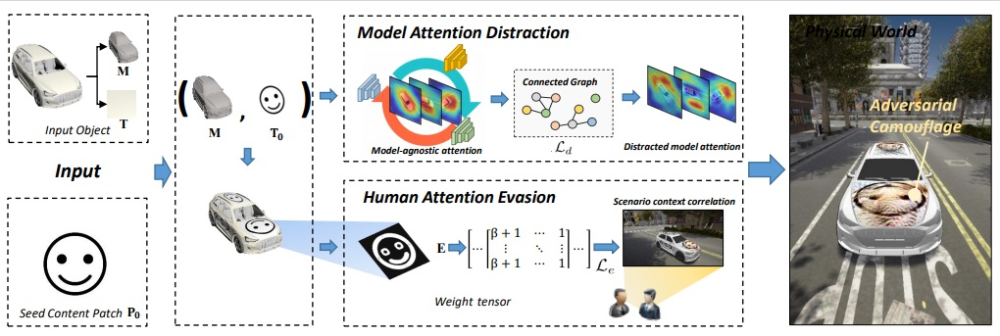
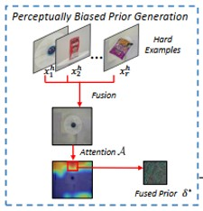
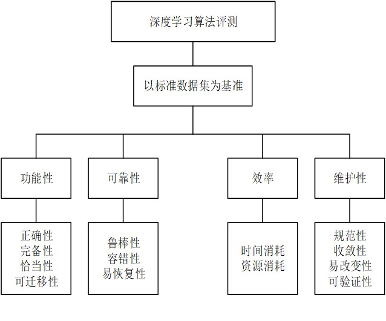
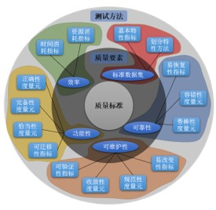

|
Jiakai Wang (王嘉凯)
I am a PhD student (2018.09-) in the State Key Laboratory of Software Development Environment (SKLSDE), SCSE at Beihang University,
supervised by Prof. Wei Li
and Prof. Xianglong Liu.
I obtained my BSc degree in Computer Science and Engineering (Summa Cum Laude) from Beihang University in 2018.
Email: jk_buss_scse@buaa.edu.cn
CV /
Github /
|
|
|
Research
In my PhD study, I mainly devote myself to adversarial examples research and gradually transfer to explore a related research point, to wit, physical adversarial examples. I hold the review that physical adversarial examples can powerfully promote the development of secure and robust artificial intelligence. Our previous works such as bias-based universal adversarial patch attack and dual attention suppression attack have achieved some results and draw some interesting conclusions.
Now my research focus is mainly on:
-
Physical adversarial examples generation
-
Defend adversarial attacks in the physical world
-
3D adversarial attack
-
Model robustness evaluation and testing
-
Secure and trustworthy artificial intelligence
|
| News
[2021.05.05] I am selected in Doctoral Consortium IJCAI 2021 (7 people from Mainland China).
[2021.03] One paper accepted by CVPR 2021 (Oral).
[2020.12] Our open-source platform 重明 has been awarded the 首届OpenI启智社区优秀开源项目 (First OpenI Excellent Open Source Project).
|
|  |
Dual Attention Suppression Attack: Generate Adversarial Camouflage in Physical World
Jiakai Wang, Aishan Liu, Zixin Yin, Shunchang Liu, Shiyu Tang, Xianglong Liu.
IEEE Conference on Computer Vision and Pattern Recognition (CVPR), 2021
(Oral)
pdf /
News:
(机器之心)
/Project page
We propose the Dual Attention Suppression (DAS) attack to generate visually-natural physical adversarial camouflages with strong transferability by suppressing both model and human attention.
|
|  |
Bias-based Universal Adversarial Patch Attack for Automatic Check-out
Aishan Liu*, Jiakai Wang*, Xianglong Liu, Bowen Cao, Chongzhi Zhang, Hang Yu.
European Conference on Computer Vision (ECCV), 2020
pdf /
News:
(新智元)
/Project page
We propose a bias-based framework to generate class-agnostic universal adversarial patches with strong generalization ability, which exploits both the perceptual and semantic bias of models.
|
|  |
人工智能安全与评测
刘艾杉, 王嘉凯, 刘祥龙
人工智能(AI-View), 2020
pdf
|
|  |
人工智能机器学习模型及系统的质量要素和测试方法
王嘉凯, 刘艾杉, 刘祥龙
信息技术与标准化, 2020
pdf
|
|
重明 (AISafety)
pdf /
(News: TechWeb) /
Project page
重明 is an open-source platform to evaluate model robustness and safety towards noises (e.g., adversarial examples, corruptions, etc.).
The name is taken from the Chinese myth 重明鸟, which has strong power, could fight against beasts and avoid disasters.
We hope our platform could improve the robustness of deep learning systems and help them to avoid safety-related problems.
重明 has been awarded the 首届OpenI启智社区优秀开源项目 (First OpenI Excellent Open Source Project).
|
| Main Awards
[2021.06] Beihang university Excellent Academic Paper Award.
[2020.09] China National Scholarship (Top2%).
[2020.09] Beihang University Merit Student.
[2019.10] Beihang University First Prize Scholarship.
[2018.09] Beihang University Outstanding Freshman Scholarship (1/12).
[2018.06] Outstanding Graduates of Beijing Province.
|
|